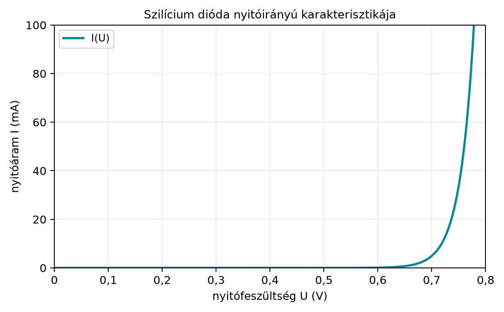
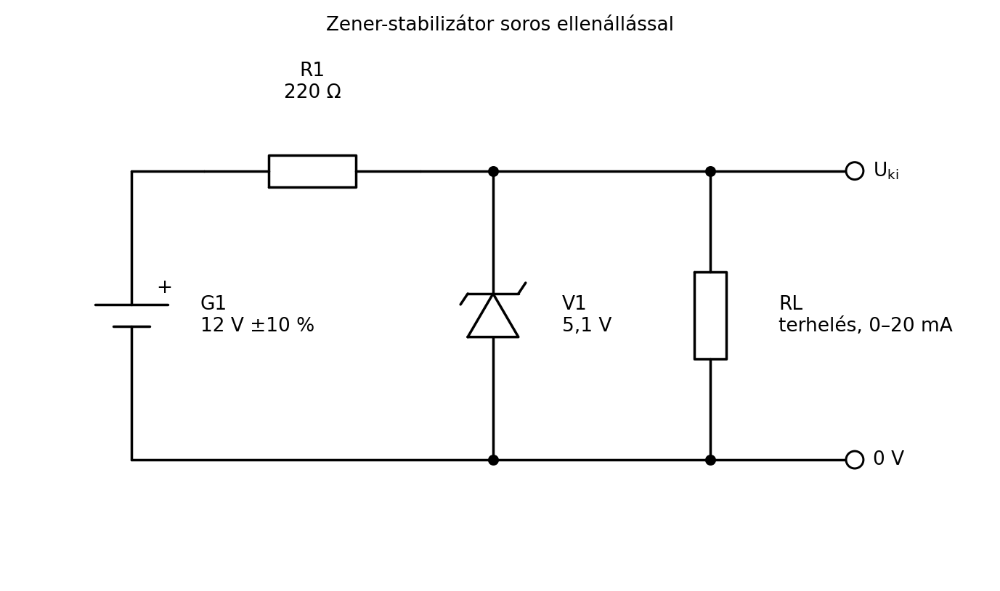
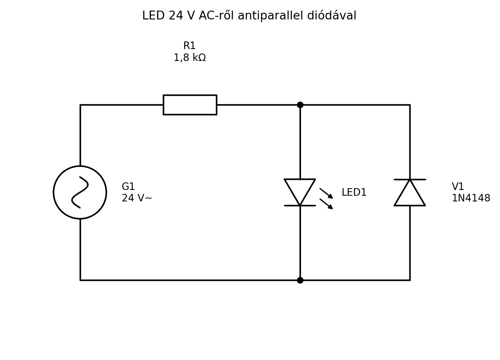
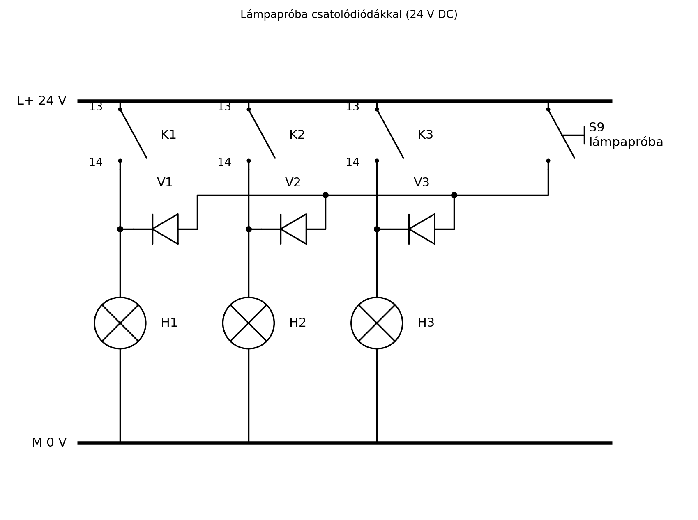
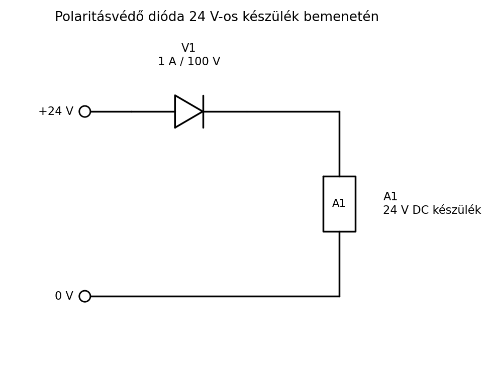
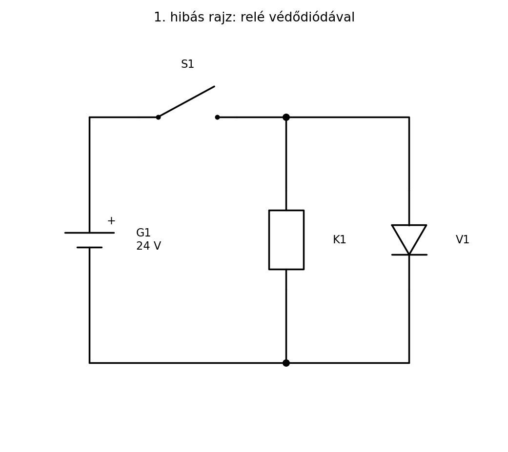
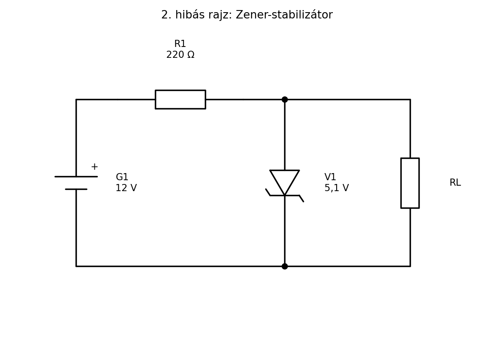
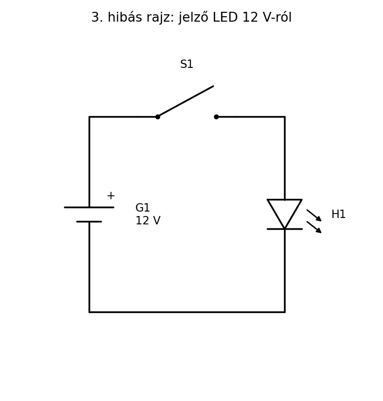
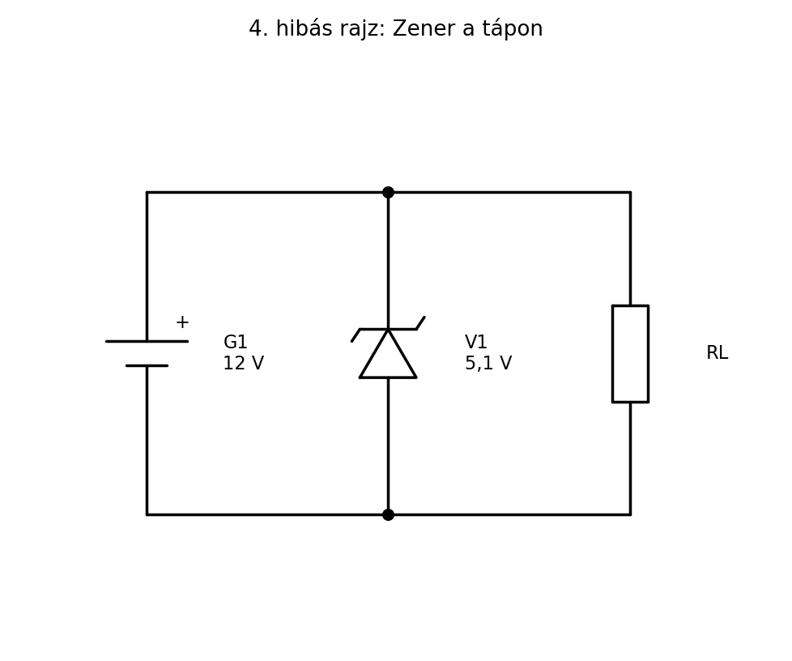

A dióda a villamosipar legkisebb, mégis az egyik legfontosabb „szelepe”. Ha LED-es jelzőlámpát szerelsz be, ha relé tekercsét vezérled, ha hálózati tápegységet javítasz, vagy ha egy motor vezérlésében szabadonfutó diódát keresel, mindig ugyanazzal a kérdéssel találkozol: merre engedi az áramot a dióda, és mekkora feszültségesést okoz közben. A rosszul bekötött vagy alulméretezett dióda egy kapcsolásban túlmelegedést, tönkremenő félvezetőt vagy akár a vezérlő tranzisztor károsodását is okozhatja. Ebben az alfejezetben a félvezető anyagok és a PN-átmenet viselkedéséből indulunk ki, majd eljutunk a dióda karakterisztikájáig és a gyakorlatban előforduló speciális diódafajtákig.
Vegyünk egy gyakori szerelői helyzetet: egy 12 V-os egyenáramú tápegységről szeretnél egy piros LED-et üzemeltetni. A LED is dióda, ezért csak egy irányban világít, és nyitóirányban a feszültségesése jellemzően 2 V körül van. Ha közvetlenül a 12 V-ra kötnéd, a maradék feszültség miatt akkora áram folyna át rajta, hogy a LED azonnal tönkremenne. Ezért kell vele sorba kötni egy előtét-ellenállást, amely az áramot a biztonságos értékre korlátozza.
Az ábra egy teljesen hétköznapi kapcsolást mutat: a tápegység pozitív sarkától a kapcsolón, az előtét-ellenálláson és a LED-en keresztül jutunk vissza a negatív sarokhoz. A LED mellett a rajzjelben a háromszög az áram irányát jelzi. A dióda tehát nem passzív alkatrész, hanem egyirányú vezetőként viselkedik, és ezt a viselkedést a félvezető anyagok tulajdonságai határozzák meg.
A félvezető anyagok – a gyakorlatban szinte mindig szilícium, régebben germánium – a vezetők és a szigetelők közötti átmenetet képviselik. Tiszta, úgynevezett intrinsic szilíciumban minden atom négy vegyértékelektronnal kapcsolódik a szomszédjaihoz, így szobahőmérsékleten alig vannak szabad töltéshordozók. A hőmozgás hatására azonban kis számú elektron kiszakadhat a kötésből, és maga után egy pozitív töltésű „lyukat” hagy. Ez a lyuk úgy viselkedik, mint egy pozitív töltéshordozó, mert a szomszédos elektronok átugorhatnak bele, így a lyuk maga is vándorol.
Definíció. A félvezető anyag olyan kristályos anyag, amelynek vezetőképessége a vezetők és a szigetelők közé esik, és amelynek töltéshordozó-száma szándékos szennyezéssel nagyságrendekkel megnövelhető.
A szennyezés (adagolás, dópolás) két alapvető félvezető típust hoz létre:
Önmagában az N vagy P típusú anyag még nem dióda; ahhoz a két réteget egymással érintkezésbe kell hozni.
Ha egy P és egy N típusú félvezető réteget egymás mellé helyezünk, akkor a határfelületen a többségi töltéshordozók diffúziója indul meg: a lyukak az N oldalra, az elektronok a P oldalra vándorolnak. A határ közelében azonban a donor- és akceptor-ionok visszamaradnak, és egy töltésszegény, úgynevezett kiürített réteg alakul ki. Ebben a rétegben beépített elektromos tér jön létre, amely a további diffúziót megakadályozza. A beépített feszültség szilíciumnál körülbelül 0,7 V, germániumnál körülbelül 0,3 V.
Definíció. A PN-átmenet a P és N típusú félvezető réteg közötti határfelület, amelyet kiürített réteg és beépített potenciálgát jellemez. Ez az átmenet adja a dióda egyirányú vezetési tulajdonságát.
A PN-átmenet viselkedése a rákapcsolt feszültség polaritásától függ:
A dióda áram-feszültség karakterisztikáját a Shockley-egyenlet írja le:
ahol a telítési áram (jellemzően – szilícium diódánál), az ideálissági tényező (jellemzően 1–2), és szobahőmérsékleten a termikus feszültség. A képletből látszik, hogy a nyitóirányú áram exponenciálisan nő a feszültséggel, míg záróirányban az áram gyakorlatilag értékhez tart.
A gyakorlati számításokban azonban nem az exponenciális egyenletet használjuk, hanem egy egyszerűsített modellt:
Szabály. Egyszerűsített diódamodell: nyitóirányban a szilícium dióda feszültségesése körülbelül , záróirányban a dióda szakadásként viselkedik (ideális esetben ). Ez a modell elegendő a legtöbb szerelői méretezéshez.
A közelítés azonban csak akkor érvényes, ha a dióda a specifikált tartományban működik. Az alábbi ábra a valós nyitóirányú karakterisztikát mutatja.

Az ábra azt mutatja, hogy 0,6 V alatt alig folyik áram (0,65 V-nál is csak kb. 0,7 mA), majd kb. 0,7 V fölött az áram meredeken emelkedik: 0,75 V-nál már kb. 34 mA. A záróirányú áram olyan kicsi, hogy ezen a lineáris skálán nem látszik; a valóságban nA–µA nagyságrendű (a Shockley-modell értéke ennél is kisebb).
Interaktív ábra. Az alábbi interaktív diódamodell-kalkulátorban csúszkával állítható a hőmérséklet, a telítési áram és a munkaponti áram; a kiírt így a munkaponti áram függvényében is leolvasható. A görbe azonnal frissül, így látható, hogyan tolódik a nyitófeszültség a hőmérséklet növelésekor körülbelül meredekséggel (ökölszabály: kb. ). A hőfoktényező a munkaponti áramtól is függ: nagyobb áramnál kisebb abszolút értékű – a modellben 0,1 mA-nél kb. , 10 mA-nél kb. . A pontos értéket az adatlap adja. A statikus tartalék ábra három hőmérsékleti görbét mutat ugyanazon a koordináta-rendszerben.

A hőmérsékletfüggés azért fontos, mert melegedő kapcsolószekrényben a dióda nyitófeszültsége csökken, és ugyanahhoz az áramhoz kisebb feszültség elegendő. A LED-eknél ez a hatás a színérzetet is befolyásolhatja, a Zener-diódánál pedig a referenciafeszültség stabilitását.
A dióda kiválasztásakor a következő katalógusadatokat kell ellenőrizni:
Ezek az értékek mindig a konkrét gyártói adatlapról olvasandók le; a fenti számok csak jellemző példák.
| Fajta, rajzjel | (V, ell.) | Kulcsadat | Hely a szerelő munkájában | Cserénél figyelj |
|---|---|---|---|---|
| egyenirányító (alapjel) | 0,7–1,1 | , , | híd, szabadonfutó dióda (1N400x-jellegű) | feszültség- és áramosztály |
| gyors, ultragyors (alapjel) | 0,8–1,5 | kapcsolóüzemű táp | lassú diódával nem pótolható | |
| Schottky (S alakú katódvonal) | 0,2–0,5 (ell.) | kis , nagyobb záróáram | táp kimenete, polaritásvédelem | melegedés, zárófeszültség |
| Zener (megtört katódvonal) | letörésben | , | referencia, segédtáp | azonos és teljesítmény |
| TVS, szupresszor (Zener-szerű, kétirányúnál két dióda) | – | üzemi, letörési és korlátozási feszültség, impulzusteljesítmény | 24 V-os PLC-bemenet, buszvonal túlfeszültség-védelme | egy- vagy kétirányú |
| LED (dióda két kifelé mutató nyíllal) | 1,6–3,6, színfüggő (ell.) | jelzés, világítás | előtét-ellenállás, szín | |
| fotodióda (befelé mutató nyilak) | – | záróáram a fénytől | érzékelő, optocsatoló: Hő-, fény- és feszültségfüggő elemek és érzékelők | hullámhossz, tokozás |
| bypass-dióda napelemmodulban | 0,3–0,6 (ell.) | a modul áramához | árnyékolt cellasor megkerülése: Napelemes rendszerek és háztartási méretű kiserőmű | a modulgyártó típusa |
A varisztor nem dióda, de hasonló feladatot lát el; lásd Hő-, fény- és feszültségfüggő elemek és érzékelők.
Kiválasztás négy lépésben.
A Zener-dióda olyan szilícium dióda, amelyet arra terveztek, hogy záróirányú letörésben üzemeljen. A letörési feszültség, azaz a Zener-feszültség , jól meghatározott és a gyártás során beállítható. Ha a Zener-diódán a záróirányú feszültség eléri -t, akkor a feszültség a továbbiakban alig nő, miközben az áram széles tartományban változik. Így a Zener-dióda egyszerű feszültségstabilizátorként használható.
Szabály. A Zener-dióda feszültségstabilizátorként záróirányban üzemel. A terheléssel párhuzamosan kötjük, és egy soros előtét-ellenállással korlátozzuk az áramot. A bemeneti feszültségnek mindig nagyobbnak kell lennie -nél.
A Zener-stabilizátor méretezésénél figyelembe kell venni a minimális Zener-áramot, amely a stabilizáláshoz szükséges, és a maximális áramot, amelyet a terhelés lekapcsolásakor kap.
Az alábbi rajz a legegyszerűbb Zener-stabilizátort mutatja: a 12 V-os tápból az R1 előtét-ellenálláson át folyik az áram, a V1 Zener-dióda a terheléssel párhuzamosan, záróirányban (katódjával a + sínen) áll.

Az R1-en átfolyó áram a felső csomópontban kétfelé ágazik: (Kirchhoff csomóponti törvénye, lásd Kirchhoff-törvények és hálózatszámítás). Ha a terhelés kevesebbet vesz fel, a különbséget a Zener „nyeli el” – ezért a Zener árama és melegedése terheletlen állapotban a legnagyobb. Kövesd a rajzon: mi történik -vel, ha az RL-t lekötjük?
A LED (light-emitting diode, fénykibocsátó dióda) olyan PN-átmenet, amely nyitóirányú áram hatására fényt bocsát ki. Az elektronok és lyukak rekombinációja során felszabaduló energia fotonok formájában távozik. A kibocsátott fény színét a félvezető anyag sávszerkezete határozza meg; ez egyben a nyitófeszültséget is befolyásolja:
A LED áramát mindig korlátozni kell, mert a nyitófeszültség felett az áram exponenciálisan nő. A megengedett áram általában 2–20 mA jelző LED-eknél, de nagy teljesítményű LED-eknél ennél sokkal nagyobb is lehet. Az áramkorlátozásra soros előtét-ellenállást vagy áramgenerátoros meghajtót használunk.
Beépítés előtt a diódák polaritását a tokon kell felismerni. Az alábbi ábrán négy gyakori kivitel és alattuk a rajzjel látható. Az egyenirányító diódán (1) világos gyűrű, a Zener-dióda üvegtokján (2) sötét gyűrű jelöli a katódot, a felirat (pl. 5V1) a Zener-feszültség. Az 5 mm-es LED-nél (3) a hosszabb láb az anód, a perem lapolt oldala és a rövidebb láb a katód. A felületszerelt (SMD) diódán (4) csík jelzi a katódot. Kétség esetén a multiméter diódavizsgáló állása (5) dönt: feszültségmentes alkatrészen, a piros zsinórral az anódon a műszer a nyitófeszültséget (szilíciumdiódánál kb. 0,6 V-ot) mutatja, fordítva OL-t.

A rajzjelben a háromszög az áram (nyitó) irányába mutat, a keresztvonal a katód – a tokon lévő gyűrű ugyanezt az oldalt jelöli. SMD LED-eknél a katódjelölés gyártónként eltér, ezért ott az adatlapot kell megnézni. A HTML-kiadásban egy alkatrészre mutatva megjelenik a katód felismerésének módja.
A szekrényben a LED-es jelzőlámpa és a kis dióda három tipikus helyen fordul elő. Mindhárom kapcsolásnál előbb a rajzon kövesd az áram útját, és csak utána olvasd a magyarázatot.
(a) LED 24 V AC-ről. Egy LED zárófeszültsége jellemzően csak kb. 5 V (ellenőrizendő: LED adatlap), ezért váltakozó feszültségen a negatív félperiódusban átütne. Az antiparallel V1 dióda ebben a félperiódusban vezet, és a LED-en legfeljebb kb. 0,7 V záróirányú feszültség marad.

Számítás: a csúcsfeszültség ; a LED csúcsárama (≤ 20 mA ✓). A LED csak a pozitív félperiódus egy részében vezet, ezért az átlagárama mindössze kb. 5,5 mA – ugyanez a LED halványabb, mint 17,7 mA egyenárammal. Az R1-en viszont mindkét félperiódusban folyik áram (a negatívban a V1-en át), így a teljesítménye közelítőleg , a diódák feszültségesésével pontosabban kb. 0,29 W → 0,5 W-os ellenállás kell (a 0,25 W kevés). Szabály. A gyári „24 V AC/DC” jelzőlámpa ezt belül (egyenirányító híddal és áramgenerátorral) megoldja; egyedi LED-et váltakozó feszültségre csak antiparallel diódával szabad kötni.
(b) Lámpapróba. A H1–H3 jelzőlámpát a saját K1–K3 kontaktor 13–14 segédérintkezője kapcsolja. Az S9 „lámpapróba” nyomógomb a V1–V3 diódákon át mindhárom lámpát egyszerre bekapcsolja, így az izzó- vagy LED-hiba üzem közben is kiderül.

A diódák szerepe: nélkülük az S9 vezetéke a K1–K3 érintkezők kimenőoldalát közvetlenül összekötné, és egyetlen kontaktor behúzásakor a másik két lámpa (és a velük párhuzamos PLC-visszajelző bemenetek) is feszültséget kapna, vagyis hamis „be” jelzést adna; a dióda csak az S9 felől a lámpa felé enged áramot, visszafelé zár.
(c) Polaritásvédő és VAGY-dióda. Egy 24 V-os készülék bemenete elé sorosan kötött dióda téves (fordított) bekötésnél zár, így a készülék nem kap fordított feszültséget; ára kb. 0,7 V feszültségesés és hőveszteség.

Ugyanez a dióda két tápegység „VAGY”-kapcsolására is szolgál: mindkét tápegység + kimenete egy-egy diódán át jut a közös sínre, így az egyik kiesésekor a másik táplál, de a két kimenet nem táplál egymásba (a redundáns tápot az Egyenirányítók, szűrők, stabilizátorok, kapcsolóüzemű táp és PFC alfejezet tárgyalja).
Tilos. LED-et 230 V-ra soros ellenállással kötni: 2 mA-hez kb. 115 kΩ kellene, amelyen , 10 mA-nél már kb. 2,3 W hő keletkezik, és a LED záróirányú védelme is hiányzik. A 230 V-os jelzőlámpa gyári, kondenzátoros vagy áramgenerátoros előtétes kivitel.
A fotodióda olyan PN-átmenet, amelyet úgy alakítottak ki, hogy a rá eső fény hatására töltéshordozók keletkezzenek, és így fotóáram folyjon. A fotodióda jellemzően záróirányban üzemel, mert így a fény hatására a záróirányú áram arányos a megvilágítással. Felhasználják fényérzékelésre, optikai kommunikációra, fénykapukban és távirányító vevőkben.
A szabadonfutó dióda (freewheeling diode, közismert nevén védődióda) olyan dióda, amelyet induktív terheléssel – relé tekercsével, mágneskapcsolóval, motor tekercsével – párhuzamosan, záróirányban kötünk be. Egyenáramú kapcsolásban a tekercs áramának hirtelen megszakításakor nagy önindukciós feszültségcsúcs keletkezik, amely a kapcsolótranzisztort tönkreteheti. A szabadonfutó dióda biztosítja, hogy a tekercs árama a diódán keresztül lassan lecsenghessen: a kapcsolótranzisztoron a feszültség a tápfeszültség plusz kb. 0,7 V-ra korlátozódik, a tekercsen pedig kb. 0,7 V fordított feszültség áll.
Megjegyzés. A szabadonfutó dióda lassítja a tekercs áramának lecsengését, így a mágneskapcsoló később enged el. Ahol ez gond (a főérintkezők ívelése, gyors leválasztás), dióda + Zener-dióda, varisztor vagy RC-tag, illetve a gyártó által ajánlott védőmodul használatos (ellenőrizendő: gyártói adatlap).
Mennyivel lassabb az elengedés, és mekkora a tüske? Az alábbi ábra egy 24 V-os, 400 Ω-os (60 mA-es) relétekercs kikapcsolását mutatja három esetben, , szemléltető induktivitással (ellenőrizendő: relé adatlap). Bal oldalt a tekercsáram, jobb oldalt a kapcsolótranzisztor feszültsége látszik; a kikapcsolás a pillanatban történik.
A szabadonfutó diódával az áram szerint cseng le, és csak alatt csökken 10 %-ra; a tranzisztoron közben csak áll. Ha a diódával sorba egy 36 V-os Zenert kötünk, a tekercsen ellenfeszültség áll, az áram szerint, alatt nullára csökken – cserébe a tranzisztoron jelenik meg, ezért annak -ja legalább 80–100 V legyen. A védőelem nélküli tüskét szándékosan nem számoljuk: azt a tranzisztor letörése és a szórt kapacitás szabja meg. A HTML-kiadásban az , az és a Zener-feszültség állítható. Olvasd le: melyik esetben kapcsol ki a relé a leggyorsabban, és melyikben a legkisebb a tranzisztor feszültségterhelése?
| Védőelem | Tüske a tranzisztoron | Elengedési késés (példa) | Mikor használjuk |
|---|---|---|---|
| nincs | több száz V (letörésig) | – | soha induktív DC terhelésnél |
| szabadonfutó dióda | (24,7 V) | nagy (≈ 11,5 ms) | relé, kis DC tekercs, ahol a késés nem számít |
| dióda + Zener / TVS | (60,7 V) | kicsi (≈ 2,5 ms) | DC mágneskapcsoló, gyors elengedés kell |
| varisztor / RC-tag | a varisztor / RC méretezésétől függ | kicsi | AC tekercs, lásd Mágneskapcsolók és relék |
Szabály. A szabadonfutó diódát úgy kell bekötni, hogy normál üzemben záróirányú legyen: katódja a tápfeszültség pozitív oldalára, anódja a negatív oldalára kerül. A dióda zárófeszültségének nagyobbnak kell lennie a tápfeszültségnél.
Egy 24 V DC mágneskapcsoló tekercsét PLC tranzisztoros kimenete vezérelte. A kapcsolás jól működött, amikor a tekercset meghúztuk, de a kikapcsolás pillanatában a PLC kimeneti tranzisztora idővel rendszeresen tönkrement. A szerelő megmérte a kapcsoló tekercsén a kikapcsolási feszültségcsúcsot: a 24 V-os tápfeszültség helyett több száz voltos negatív tüskét látott. A hiba oka az volt, hogy nem volt szabadonfutó dióda a tekercs kapcsaival párhuzamosan. A javítás során egy 1 A-es, 100 V zárófeszültségű diódát kötöttek a tekercsre, katódját a pozitív kapocsra. Ezután a feszültségcsúcs megszűnt, és a tranzisztor sem ment tönkre. A tanulság: egyenáramú induktív terhelés kapcsolásánál a szabadonfutó dióda nem kényelmi kiegészítő, hanem alapvető védelem.
LED bekötése előtét-ellenállás nélkül. Ilyenkor a LED-en átfolyó áramot csak a forrás belső ellenállása és a LED dinamikus ellenállása korlátozza, ami rendszerint sokszorosa a megengedett 20 mA-nek. A LED túlmelegszik, fénye kialszik, a tokozás megfeketedhet. Helyes gyakorlat: mindig méretezni kell a soros ellenállást.
Zener-dióda nyitóirányú használata feszültségstabilizálásra. A Zener-dióda stabilizáló hatása a záróirányú letörésben van; nyitóirányban csak 0,7 V-ot ejt, mint egy közönséges dióda. Ha valaki 10 V stabilizálására köti be nyitóirányban, a kimeneten csak 0,7 V-ot kap. Helyes: a katalógus szerinti -nek megfelelő Zener-diódát záróirányban, a terheléssel párhuzamosan és soros előtét-ellenállással kell kötni.
Szabadonfutó dióda fordított bekötése. Ha a diódát a relé tekercsével párhuzamosan nyitóirányban kötjük be, akkor a dióda normál üzemben rövidre zárja a tekercset, a relé nem húz meg, és a dióda vagy a tápegység tönkre mehet. A dióda katódját mindig a pozitív tápfeszültségű csomópontra kell kötni.
Az előtét-ellenállás teljesítményének alulméretezése. A LED áramkörben az ellenálláson disszipált teljesítmény vagy . Ha a számított 0,25 W helyett 0,125 W-os ellenállást építünk be, az ellenállás túlmelegszik, elszenesedhet, és a kapcsolás meghibásodik. Mindig a számított teljesítménynél nagyobb terhelhetőségű alkatrészt válasszunk.
Mind a négy rajz szándékosan hibás; ne építsd meg őket. Keresd meg a hibát, írd le a következményét, a javítást és egy ellenőrző mérést. A megoldás a feladatgyűjtemény 37.1 szakaszának „Megoldások” részében található.




Gyakorlás: ennek az alfejezetnek a kidolgozott példái, gyakorlatai és megoldással ellátott feladatai az Összefoglaló feladatgyűjtemény villanyszerelő tanulóknak című kötet 37.1 szakaszában találhatók.
A félvezető anyagokban szennyezéssel N típusú (elektron-többségi) és P típusú (lyuk-többségi) rétegek hozhatók létre. A P és N réteg határán kialakuló PN-átmenet a dióda alapja: nyitóirányban 0,6–0,7 V szilícium feszültségeséssel áramot vezet, záróirányban gyakorlatilag szakadásként viselkedik. A dióda karakterisztikáját a Shockley-egyenlet írja le, de a gyakorlati méretezéshez az egyszerűsített modellt használjuk. A Zener-dióda záróirányú letörésben stabilizál feszültséget, a LED nyitóirányú áram hatására fényt bocsát ki, a fotodióda fény hatására áramot ad, a szabadonfutó dióda pedig az induktív terhelések kikapcsolási feszültségcsúcsait vezeti le. LED előtét-ellenállása alapján számítható, és mindig ellenőrizni kell az ellenállás teljesítményét. Továbbvitt eredmény. A dióda egyirányú vezetése, a PN-átmenet és a szabadonfutó dióda alkalmazása közvetlenül megalapozza a Tranzisztorok és kapcsoló üzem alfejezetet, ahol a PN-átmenetek kombinációjával felépülő bipoláris tranzisztor működését vizsgáljuk.
Az alfejezetben leírt félvezető-fizikai alapok, a Shockley-egyenlet, az egyszerűsített diódamodell és a LED-előtét számítása az elektrotechnika klasszikus, stabil ismeretei. A Zener- és LED-jellemzők (nyitófeszültség, teljesítmény) gyártófüggők; az itt megadott értékek jellemző példák, pontos adatokat a gyártói adatlapról kell leolvasni. A szabványos E12 sor ellenállásértékeit az IEC 60063 szerint célszerű ellenőrizni. A szabadonfutó dióda zárófeszültség-megválasztása a kapcsolás feszültségszintjétől függ, ezért a konkrét kiválasztást mindig a gyártói adatlap és a kapcsolási feszültség alapján kell elvégezni.